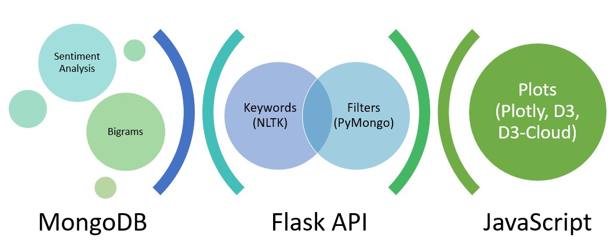

Methodology
Data Collection and Analysis

Data Collection
- We started by collecting metadata on articles discussing immigration using NewsAPI.
- We then webscraped the full text of these articles with Newspaper3k.
Data Analysis
-
Two corpora were created: headlines and complete text.
- We determined the most frequent bigrams using NLTK and then filtered these using a custom function.
- A professional linguist classified the sentiment of the article headlines.
Libraries
- Python
- Flask
- Newspaper3k
- NLTK
- pandas
- PyMongo
- re
- spaCy
- JavaScript
- DataTables.js
- D3-cloud.js
- D3.js
- Plotly.js
Web Design
- Bootstrap
- Bootswatch
- Colorgorical
App Architecture

Flask API
-
A total of 5 types of flask api routes were created.
- News Sources: This route returns a list of all news sources in the database.
- Sentiment Scores: This route returns the raw data and can be filtered by news source.
- Sentiment Counts: This route returns the total number of occurrences of each sentiment category. This route can be filtered by news source.
- Keywords: This route pulls the headlines from the database and then determines and returns the top 50 most frequent words. This route can be filtered by news source.
- Bigrams: This route returns the headline or full text bigrams.
JavaScript
- The api calls were performed in Javascript in order to access the data for visualization.